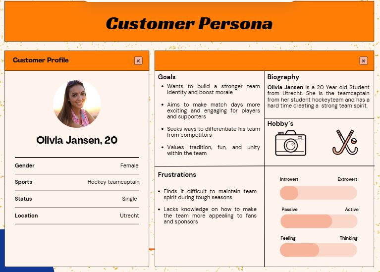

General Information
This branded website is publicly available at https://irisvangroenestijn.github.io/teambeast/
This website was created by
- Iris van Groenestijn (232168)
- Merel Entius (233730)
- Max Heijnsdijk (231269)
- Luna van der Windt (232646)
Content
Please clarify here the match between students and pieces of content. Make sure that you provide a link to the correct page within the website
| # | Student ID | Value | Name and link of content |
|---|---|---|---|
| 1. | 232168 | Homepage and About us | Homepage About us |
| 2. | 232646 | About us and Get inspired | About us Get Inspired |
| 3. | 231269 | Get inspired | Get Inspired |
| 4. | 233730 | Corporate | Corporate |
Logo:
Brand Persona's:

Visual identity:
Production
Design Elements
- #0F3894 Dark blue stands for trust and unity, which is key for any sports team. It’s strong dependable, and gives a real sense of teamwork.
- #FEF6ED; Off-White softens everything, making the mascots feel more welcoming and inclusive - because sports are for everyone.;
- #306A4A; Green is about resilience, growth, and pushing forward, just like athletes improving their game. It also connects with sports played on grass and community spirit. ;
- #F1600D Bold orange is all about energy, excitement and fun. It’s what gets people hyped up and makes the mascots stand out at games and events.
- Font choice: Racing Sans One
Racing Sans One embodies power, speed, and self-assurance, all of which are essential components of competitive sports and team spirit. It is the ideal complement to our mascot-focused logo because of its strong, broad letterforms and somewhat compressed design, which imply speed and energy. The font's clean, contemporary design guarantees readability on both digital and physical devices, and its sporty vibe helps us engage with our target audience.We convey that TeamBeast is energetic, competitive, and designed for teams who wish to stand out by using Racing Sans One.
User interface patterns homepage:
Grids: The layout relies heavily on Bootstrap’s grid system (row, col-lg-3, col-md-6, etc.), which aligns with Gestalt principles of proximity and alignment. Grid systems improve visual hierarchy and create a consistent rhythm, ensuring users can predict where to find content, which enhances usability.
Justification:
Supports responsive design across devices (mobile-first strategy). Creates a balanced and symmetrical layout (critical for user trust). Respects F-layout scanning patterns, optimizing attention flow.
Carousels (Testimonials): The carousel uses carousel-fade and timed transitions to rotate client testimonials, a common pattern for displaying multiple related items in limited space.
Justification:
Based on the progressive disclosure principle: show a manageable chunk of content without overwhelming the user. Supports social proof by surfacing client feedback. Enhances engagement through motion-based affordance (fade transitions draw attention without distraction).
Menu Organization (Navbar): The top navigation menu is clean, limited to five core items (Home, About us, Get inspired, Corporate), following Hick’s Law, which states that increasing the number of choices increases decision time.
Justification:
Groups content logically (home, company info, inspiration, and business). Adheres to Jacob’s Law: users spend most of their time on other sites, so navigation should feel familiar. Responsive toggler ensures usability on mobile devices.
User interface patterns about us page:
Navigation Bar (Top Horizontal Menu): There’s a clear separation between brand (logo) and options (Home, About us, Get Inspired, Corporate).
Justification:
Consistency (users can predict where to go), recognition over recall, and established UI norms.
Two-Column Hero Layout
Left column: Bold text content. Right column: Full-screen looping video.Justification:
You see visual content when you enter the page. This will engage users to scroll. Text and visuals work in harmony.
Cards for Values: Usage: Each value (e.g., "Roar with Confidence") is in its own section—styled like a sort of card by itself.
Justification:
Chunking (splits info into digestible parts), F-pattern (readability), and affordance (each block feels standalone and scannable).
Carousel (Image Slider)
Justification:
Good for showcasing limited visuals (Vision & Mission) in a confined space. It only shows essential info at first, but the user can explore more if interested.
User interface patterns get inspired page
Top navigation bar (horizontal layout): The key links, including Home, About Us, Get Inspired, and Corporate, are displayed in a single line at the top left, with the logo positioned on the far left and an additional logo on the far right. This works because the top-bar structure is a familiar UI patterns, which improves recognition over recall (Nielsen's heuristics). Users don't need to search or remember where pages are - they're visible and predictable.
justification:
uniformity: aligns with users expectations throughout the internet. Recognition over Recall: minimizes cognitive effort. Flat navigation: simple to comprehend for quick-paced users such as athletes or coaches.
Single Hero Section with bold graphics: a comprehensive horizontal layout showcasing three prominent mascot images (tiger, eagle, lion) with the heading 'Bold Icons' centrally positioned above them. This visually captivating layout adheres to the principle of 'first glance impact,' ensuring that users are visually engaged prior to reading.
justification:
emotional design (Norman): vivid animal expressioons inspire a sense of power and encouragement. Dual coding theory (paivio): the integration of imagery and text (icons along with a tagline) enhances its memorability. Visual Hierarchy: the central headline, presented in a vivid orange, immeditately captures attention.
Text sections below (chunked descriptions): outline three categories of mascots (bold icons, bubbly cartoon, and detailed smart) featuring prominent green headings and italicized black text for the body. Well-structured and easily scannable sections improve readability and align with the F-pattern reading style.
Justification:
Chunking (Miller's law): divides information into manageble segments. F-pattern: the arrangement of text facilitates the way users generally navigate screens. Affordance: each section appears as an individual 'card' or block, distinctly separated visually.
Justification of Design with theory and vocabulary
Navigation structure:
The website's navigation structure is designed to be clear and user-friendly. It features four main sections: Home, About Us, Get Inspired, and Corporate. By opting for a linear and shallow structure without submenus, the site remains easy to navigate—especially on mobile devices. This approach is intentional: a flat architecture improves findability, which is essential for our target audience of sports fans, teenagers, and coaches who want quick access to content. The homepage (index.html) serves as an engaging overview or landing page. It highlights the company’s core value propositions, including who we are, what we offer, testimonials, and team member profiles. The remaining pages allow for deeper exploration of information, ensuring that the main page stays light yet informative. This structure follows the principles of the information scent theory, guiding users toward more detailed content without overwhelming them. It also aligns with content chunking and the serial position effect, placing key information—like the brand mission and contact calls-to-action—at both the beginning and end of the page scroll, where users are most likely to notice them. Finally, scannability is prioritized through the use of visual breaks such as clear sections, headings, and images, in line with Nielsen’s usability heuristics, ensuring a smooth and intuitive user experience.
1. How does the website show the brand’s values and personality?
The website clearly reflects what TeamBeast stands for:
- Roar with Confidence: The homepage grabs your attention right away with strong mascot images (like a tiger, eagle, and lion) and bold colors like orange and blue. These choices make the brand feel powerful and confident, which fits perfectly with the idea of teams showing who they are with pride.
- Smells like TEAM spirit: The site includes team member cards and a section with real testimonials. This helps create a feeling of community and trust. It shows that TeamBeast is about bringing people together—players, coaches, and fans—just like a mascot does.
- Fuel the Fire: The bright colors, fun font, and exciting layout give the website a lively energy. Things like moving image sliders and playful headings make the site feel fun and active—just like a real game atmosphere.
- Game Changer: The clean, easy design and simple “DM us” call-to-action show that this brand is doing something new and fresh. It’s not overly fancy, and that makes it feel more real and more approachable—perfect for amateur teams who want something cool without spending too much.
2. How does the website support the marketing and communication plan?
The design helps share the brand’s message in a smart and clear way:
3. How does the website show what makes the product special?
TeamBeast offers mascots that are affordable, customizable, and made especially for amateur teams—and the website makes that clear:
Credits
Video on the homepage was made with the following videos:
Contact Us:
Meet the Team:
- CSS-Tricks: Flexbox Guide
- Bootstrap Grid (v5.1)
- MDN: border-radius
- W3Schools: object-fit
- W3Schools: CSS Buttons
- CSS-Tricks: Background-color hover
- MDN: Media Queries
- Bootstrap Grid Options
Testimonial:
Testing Report
Testing Goals: Our goal is to evaluate the usability and effectiveness of the TeamBeast website by assessing:
- Go to about us page.
- Go to get inspired page.
- Go to corporate page.
- Go back to the home page
- Navigate to the contact information of Merel Entius.
- Go to the brand values and read them.
- Go to our instagram page.
- Navigate to our mission and vision.
- Go to our TikTok page.
Testing Methods:
Participants
Test Setting
Test Protocol:Participants were given specific tasks after the testing, such as:
They were encouraged to think aloud while completing the tasks. Responses were recorded via screen recordings and notes from observers.
Testing Results:
1.1 Positive Findings
1.2 Negative Findings
1.3 impact on usability
2. Suggested improvements
2.1 Potential improvements
2.2 Clarity in recommendations
1. Arrows on the Carousel Should Be More Noticeable
Explanation: Users are likely struggling to see or recognize the navigation arrows on the image carousel, which can lead to confusion or frustration when trying to explore content. If navigation is not intuitive, it creates friction in the user experience.
Path to implementation:
2. Separate contact page with all our information, Brand and Owners
Explanation:The user found it unorganized how all the contact information was on different pages. They would have found it more convenient if all of this could be found on one page
Path to implementation:
3. Pictures of the People in the Testimonials Should Be Bigger
Explanation: Faces create trust. Small images don’t provide enough visual connection and can make the section feel less personal or credible. Larger pictures help users associate testimonials with real people.
Path to implementation:
Team Contact Should Be on the About Us Page
Explanation: Users expect to find contact details for key team members on the About Us page. Not having this info there breaks the logical flow of the site structure.
Path to implemention:
Marketing
Context of campaign and promotional activities
The TeamBeastcampaign focuses on building brand awareness and engagement among amateur sports teams by promoting the importance of mascots in strengthening team spirit. The campaign uses Instagram, TikTok, and Facebookto reach different segments of our target audience.
Target audience:
We spoke to teamplayers and coaches coaches, involved in amateur teams to learn more about their needs and habits. This helped us shape our content and platform focus.
Primary:
18-25 Young, ambitious team captains and players who are passionate about their sport and team identity. --> These players are passionate about their sport and want to build a strong team identity. Many of them take leadership roles and are looking for ways to bring their team together. Our mascots give them a fun way to boost team spirit.
26 – 40 years experienced coaches, team managers, and leaders who are more involved in the organization and long-term development of their team. --> This group is responsible for the team’s long-term success and organization. They know that team spirit is important but often don’t have extra money to spend on it. Our mascots give them an affordable way to strengthen team unity.
Secondary:
12–25 years: younger supporters and players who want to identify with their team. Younger players and fans want to feel part of their team. A mascot gives them a fun and recognizable symbol to support and rally behind.
26 – 50+ year: Parents, friends, and local fans who support the club and value the atmosphere around the team. --> These people help create a great atmosphere around the team. They love to show their support, whether by cheering at games or sponsoring the teams. Our mascots give them another way to celebrate their favourite team.
Message: “Unite your team, boost your spirit! A mascot isn’t just a symbol; it brings energy, unity, and identity to your team.”
Objectives:
Breakdown of Reach Goals
Tiktok objectives:Reach 200 people through organic posts & interactions.
How?
- Participate in viral challenges and trends.
- Engage with sports communities through comments and interaction.
- Use strategic hashtags to increase visibility
Instagram Objective: Reach 150 people through organic posts & interactions.
How?
- Post interactive content like Q&A polls, emoji games, and giveaways.
- Use Instagram stories & reels to maintain engagment
Facebook Objective: Reach 50 people through interactive and engaging content.
How?
- Create discussion-based posts (e.g., polls, “caption this” challenges).
- Post relatable sports memes to encourage shares.
- Engage in local sports community groups to spread awareness.
Why are these goals realistic?
2. Affect Objective – Emotional connection: How We Want the Audience to Feel
We want our audience to feel:
- Curious – “What is TeamBeast? Why are mascots important?”
- Excited – “This looks fun! Imagine if our team had a mascot!”
- Interested – “How does this work? Can we get our own mascot?”
- Simple, fun posts that introduce our brand and mascots
- Polls & questions (e.g., “What animal fits your team best?”).
- Engaging visuals – showcasing fun team moments and mascots in action.
How do we create these emotions?
3. Response Objective – What We Want the Audience to Do
In the first four weeks of our campaign, our main goal is to generate meaningful social media engagement. As a new brand, we are not aiming for massive numbers, but rather quality interactions that show real interest in what TeamBeast offers. Each action from our audience is a signal that they connect with our message and are considering our mascots for their own teams.
Platform-specific goals
Instagram – Engagement That Builds Community
What we want to achieve:
- 1-2 shares per week where users tag teammates in posts or stories.
- 1-2 comments or DMs from teams asking questions or showing interest in getting a mascot.
Why it matters:
Instagram is our most visual and community-driven platform. When users tag teammates, it means they see value in the post and want others on their team to see it too. Direct messages or comments show intent and curiosity — strong signs of potential leads. Consistent likes and follower growth prove that our content is connecting with the right audience.Tiktok – Fun That Sparks Curiosity
What we want to achieve:
Why it matters:
TikTok is all about quick impact and curiosity. If people share or stitch our videos, it means they find the content engaging or entertaining enough to pass on. Comments or DMs are a direct indicator that they’re considering us. And even a small number of followers can lead to high reach if engagement is high.
Facebook – Building Trust and Word-of-Mouth
What we want to achieve:
- 1 share per week in local sports groups or by parents/supporters.
- 1-2 comments or messages from coaches, fans, or team pages.
- Gain 5-10 followers on our Facebook page.
- 10+ likes per post, especially on longer posts and team stories.
Why it matters:
Facebook users are often part of community networks. A single share in a group can lead to multiple conversations. Comments or DMs from this platform show we’re reaching coaches and managers — the people making team decisions. And likes on longer posts prove that people are not just scrolling, but taking the time to read and engage.
Overall Engagement Goals
By combining the strengths of each platform, in four weeks we aim to achieve:
We focus on quality over quantity, with realistic goals that match our current growth phase. Every tag, comment, like, or message helps build TeamBeast’s identity and momentum in the amateur sports world.
Which social media do we use:
We chose to use Instagram, Facebook and TikTok, according to our survey these are the most popular platforms for our primary target audience. Instagram and TikTok help us reach young players and team captains who love engaging content. Facebook allows us to connect with coaches, team managers, and local sports communities. This mix of platforms ensures we’re not just getting views but also building real connections with teams that need our mascots Since we are just starting, we need a mix of platforms that are great for visuals, engagement, and community-building.
1. Instagram – Primary Platform for Visual Engagement
Why?
- Highly visual – Perfect for showing mascot designs, behind-the-scenes content, and team energy.
- Engagement-driven– Teams and supporters can interact easily via likes, comments, and shares.
- Instagram stories & reels – Great for quick polls, Q&A's, and fun team-related content.
2. TikTok – Fun & Viral Potential
Why?
- Great for storytelling &trends– we can show mascot transformations, fun animations.
- Easy to reach a new audience–The algorithm pushes engageing content even if we don't have many followers yet.
3. Facebook – Community & Local Engagement
Why?
Learning Points
Week 1 of posting:
The first week of the campaign was still figuring out how everything worked. So it was calm and without any suprises.
Week 2 of posting:
In the second week we saw a constant increase in the statistics which is a good sign that we are going the right direction. Facebook was still increasing while we were not posting. The meta business suite wasn’t working properly so it was our mistake that we were not posting on facebook. We are going to stay on top of this for the following weeks. For now we keep going the way we are going. Tiktok is also doing well! We only have increases and our posts already have 1508 views. Comments and shares are staying the same so we should do a challenge or giveaway on tiktok to increase those comments and shares.
Week 3 of posting:

Instagram is going incredibly well. We only have a lot of increase and no decrease which is a very good sign. Facebook it’s not going as well as Instagram. We are posting the same for facebook as on Instagram but maybe that’s not the best format to post on both platforms. Less accounts are engaged as before which is not a good sign. Tiktok is going very well. We posted only one post instead of two last week so that is why there are less views on the posts. The rest is all increasing so that’s very nice.
Week 4 of posting:

In this last week of the marketing campaign, Facebook has really skyrocketed and increased massively while Instagram has done the opposite while we have posted the same posts on both platforms, which is very odd. An explanation for why Instagram could be going downhill is that we did not post any stories. This could have helped to get better numbers. Tiktok has also been going down this last week of posting. The best explanation for this is that we posted only one post on de Monday and since then we haven’t posted anything since.
Takebacks (What we learned):
One of the biggest takeaways from our campaign was how giveaways performed across platforms, especially TikTok, where we saw the highest engagement. TikTok’s “For You” page accounted for nearly 95% of our views, proving how important it is to have engaging, quick content. We also learned that Instagram proved to be a great platform for visual storytelling, with content like mascot reveals and behind-the-scenes clips generating higher interactions.
However, Facebook didn't perform as well, especially in terms of reach. While it provided us with valuable engagement from coaches and supporters, we realized the content there wasn't resonating as strongly as on other platforms. It seems that community-focused posts with a longer form of content are more effective for Facebook’s older audience.
The most surprising discovery was the strong activity from female viewers (60%). This indicated that a focus on team spirit and identity would better align with their interests. This gives us a great insight for future content direction, where we can center more on community-building .
Future Planning
Future planning:
Looking ahead, our main focus will be on maintaining consistent giveaway campaigns on all platforms to drive engagement. As well as just posting consistently in general. These giveaways performed exceptionally well, so we plan to keep them running at a monthly cadence to sustain excitement and visibility. Alongside this, we will personalise content for each platform: TikTok will continue to host bold, fast-paced videos to capture attention, Instagram will be our space for team-centric visual stories, and Facebook will shift toward longer, community-building posts to engage coaches and local fans. We’ll also be prioritizing the use of more targeted hashtags across all platforms. In our past posts, hashtags were too general, which limited our discoverability. By focusing on location-specific and niche community hashtags, we can increase our content’s reach, especially on TikTok and Instagram.
For our social media goals:
We aim to reach 200 people per platform in the first month, with a particular focus on building a dedicated engaged audience rather than just expanding our follower base. We will also aim for a 20% increase in interactions on each platform through better content alignment and engagement tactics, including CTAs like “Tag your teammates!” and “What mascot fits your team?”
Future planning overviewProfessionalism
All the posts on both social medias can be accessed through the links below:
Instagram


Management
Lean Canvas
Problems:
- Lack of motivation: A weak team identity can cause amateur players to feel less engaged and enthusiastic about their team. This absence of pride and sense of belonging may result in poor attendance and a lack of interest during matches.
- Lack of fan engagement: Supporters are less inclined to engage with or feel a bond to teams that do not have distinct branding. In the absence of mascots or a strong visual identity, there’s little to inspire loyalty, leading to low attendance and minimal online engagement.
- Lack of identity: Numerous amateur teams lack logos, mascots, or cohesive branding, which renders them unremarkable and indistinct. This absence of identity impacts players' pride in representing their team and shapes fans' perceptions of them.
- Changes in teams: Amateur teams frequently face significant player turnover, leading to disruptions in team cohesion. Establishing a robust and enduring brand can help preserve the team's identity amidst these transitions.
- High costs for detailed branding: Many amateur teams with tight budgets find professional branding to be prohibitively costly. This financial hurdle hinders their ability to create a distinctive and polished team identity.
Solutions:
- Recognizable: We enhance teams' visibilty an memorability by offering tailoredmascots and branding. This not only increases their recognition on the field but also in the community, allowing fans to easily identify and rally behind them.
- Strengthening team spirit: A collective identity created through branding cultivates pride and cohesion among team members. The presence of a mascot or logo provides teams with a symbol to unite around, enhancing motivation and fostering a sense of community.
- Affordability: We provide high-quality branding services that are affordable for amateur teams. This enables even those with limited budgets to benefit from a compelling visual identity without the burden of excessive costs.
Key metrics
- Conversion rate: Monitoring the conversion rate of visitors to paying customers allows us to assess the success of our website and branding initiatives. This data reveals whether our messaging and user experience are compelling enough to drive sales.
- CAC: Monitoring the conversion rate of visitors to paying customers allows us to assess the success of our website and branding initiatives. This data reveals whether our messaging and user experience are compelling enough to drive sales.
- Social media engagement: Engagement on platforms like Instagram and TikTok indicates how well our brand and mascots connect with the audience. Higher engagement boosts our visibility, attracts more potential customers, and strengthens our community.
Unique value proposition:
- Our value proposition is crafted to tackle the fundamental challenges and overlooked needs of amateur sports teams, specifically the absence of cost-effective methods to enhance team identity, spirit, and engagement, by offering a distinctive and innovative solution.
Unfair advantage:
- Affordability: Many branding agencies set their prices to cater to professional or commercial clients, which often leaves amateur teams without options. By providing top-notch branding services at affordable rates, we tap into a largely overlooked market, allowing us to occupy a distinctive niche with minimal direct competition.
- Tailored for amateur teams: Many generic branding services overlook the unique culture and challenges of amateur sports. Our tailored approach gives us insider insights, allowing us to build stronger connections and deliver more impactful results, an edge that competitors in other niches can't replicate.
Channels:
- Social media: Social media allows TeamBeast to build a community and engage directly with our target audience, showcasing the advantages of our mascot service authentically. This platform broadens our reach, boosts brand loyalty, and raises awareness among potential customers.
- Paid ads: Paid advertising allows TeamBeast to focus on particular demographics, reaching potential clients who might not find us through organic means. This approach provides instant visibility, facilitating rapid growth in brand awareness and lead generation for our mascot service.
Customer segments:
- Team captains & coaches: and managers play a crucial role in shaping their teams, always seeking strategies to elevate morale and cultivate camaraderie among players. Our affordable and entertaining mascot services are designed to meet their needs, helping to create a lively, encouraging, and team-focused environment that ultimately boosts team spirit and performance during games and events.
- Team Sport players: We chose team sport players as our main customer segment because they are the heart of any sports team. These players are highly involved, passionate about their sport, and motivated to build a strong team spirit.
Cost structure:
- Marketing: Effective marketing is crucial for enhancing brand recognition and drawing sports teams to our budget-friendly mascot service. By allocating resources to digital advertising, social media initiatives, and community engagement, we can maintain a strong presence in a competitive landscape
- Manufacturing materials: Using high-quality, budget-friendly materials is essential for creating durable and attractive mascots that can endure frequent use. By keeping costs low, we can offer competitive pricing for amateur teams.
- Salaries: A talented team, including designers and customer service representatives, is essential for providing a dependable and professional experience. Offering competitive compensation helps retain skilled individuals and maintain exceptional service quality.
- Warehousing: Adequate storage is essential for keeping mascot inventory, supplies, and custom costume components prior to shipment. Effective warehousing facilitates quick processing times and aids in handling large orders.
Revenue streams
- Sales:We generate revenue mainly by providing mascot services to amateur sports teams, offering them an affordable and customizable way to enhance branding and fan experience. This approach ensures steady income while meeting the demand for professional mascots to increase visibility at events and games.
- Paid ads:Paid ads generate revenue by offering advertising space to businesses targeting amateur sports teams and their communities. This approach allows us to profit from our audience while giving relevant brands valuable exposure, creating a win-win for both advertisers and our company.
Validation of Assumptions
Before doing any interviews or research, we made several assumptions about amateur team sport players and their needs. We believed that team spirit, identity, and shared experiences were key parts of why people enjoy being on a team. We also thought there was room to improve the emotional and social side of team sports—like motivation, visibility, and unity—beyond just performance on the field.
From the beginning, we saw mascots as a playful and affordable way for teams to show their identity and boost team spirit. We assumed that many amateur teams would love to have a mascot but didn’t have the time, budget, or skills to create one. We also believed players would be excited about a brand that focuses on team culture—not just gear, but also the fun, emotional side of being part of a team.
To test these ideas, we did eight interviews with people involved in team sports. We asked about team culture, motivation, and what they felt was missing from their team experience. Their answers confirmed that things like encouragement, belonging, and fun are really important—yet often overlooked. Teams care a lot about performance, but players also value emotional connection and shared experiences.
We also sent out a Google Forms survey to get a broader view. The results showed the same thing: people value community and team spirit, and many would support a brand that helps make their team experience more unique and meaningful. Several respondents said they hadn’t seen many products or services that focus on emotional team bonding, which made our mascot idea stand out.
Thanks to this feedback, we realized that we were on the right track. Our early assumptions were validated—we saw that athletes do care deeply about team identity and are open to fun, creative ways to strengthen it. Most importantly, we learned that mascots shouldn’t just be sold as something fun. They should be presented as part of a larger story: helping teams feel more connected, confident, and proud.
This insight shaped our brand name, TeamBeast, which reflects both strength and team identity in a playful way. It confirmed that our product idea—custom mascots designed for amateur teams—fills an emotional gap and adds real value to team sports culture. These findings became the foundation for our business model and helped us build a brand that speaks directly to what teams are really looking for.